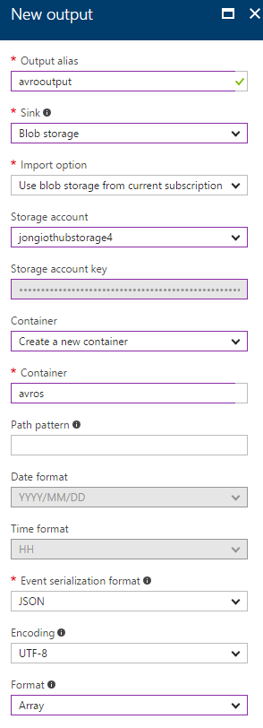

<!DOCTYPE html>
<html>
<head>
    <meta charset="utf-8">
    
    <title>How to use Apache Avro Compression with Azure IoT, Azure Stream Analytics, and Node.js | Jon Gallant</title>
    <meta name="viewport" content="width=device-width, initial-scale=1, maximum-scale=1">
    
        <meta name="keywords" content="azure,iot,avro,asa" />
    
    <meta name="description" content="I was recently working with a customer that uses Apache Avro compression and discovered that there isn’t a great example out there that shows you how to send Avro compressed messages through the IoT p">
<meta property="og:type" content="article">
<meta property="og:title" content="How to use Apache Avro Compression with Azure IoT, Azure Stream Analytics, and Node.js">
<meta property="og:url" content="http://blog.jongallant.com/2017/05/azure-iot-stream-analytics-avro-nodejs/index.html">
<meta property="og:site_name" content="Jon Gallant">
<meta property="og:description" content="I was recently working with a customer that uses Apache Avro compression and discovered that there isn’t a great example out there that shows you how to send Avro compressed messages through the IoT p">
<meta property="og:image" content="http://blog.jongallant.com/2017/05/azure-iot-stream-analytics-avro-nodejs/000188.png">
<meta property="og:updated_time" content="2017-05-05T06:36:37.000Z">
<meta name="twitter:card" content="summary">
<meta name="twitter:title" content="How to use Apache Avro Compression with Azure IoT, Azure Stream Analytics, and Node.js">
<meta name="twitter:description" content="I was recently working with a customer that uses Apache Avro compression and discovered that there isn’t a great example out there that shows you how to send Avro compressed messages through the IoT p">
<meta name="twitter:image" content="http://blog.jongallant.com/2017/05/azure-iot-stream-analytics-avro-nodejs/000188.png">
    

    
        <link rel="alternate" href="http://feeds.feedburner.com/jongallant" title="Jon Gallant" type="application/atom+xml" />
    

    
        <link rel="icon" href="/favicon.ico" />
    

    <link rel="stylesheet" href="/libs/font-awesome/css/font-awesome.min.css">
    <link rel="stylesheet" href="/libs/titillium-web/styles.css">
    <link rel="stylesheet" href="/libs/source-code-pro/styles.css">

    <link rel="stylesheet" href="/css/style.css">

    <script src="/libs/jquery/2.0.3/jquery.min.js"></script>
    
    
        <link rel="stylesheet" href="/libs/lightgallery/css/lightgallery.min.css">
    
    
        <script type="text/javascript">
(function(i,s,o,g,r,a,m) {i['GoogleAnalyticsObject']=r;i[r]=i[r]||function() {
(i[r].q=i[r].q||[]).push(arguments)},i[r].l=1*new Date();a=s.createElement(o),
m=s.getElementsByTagName(o)[0];a.async=1;a.src=g;m.parentNode.insertBefore(a,m)
})(window,document,'script','//www.google-analytics.com/analytics.js','ga');

ga('create', 'UA-1148981-8', 'auto');
ga('send', 'pageview');

</script>
    
    

</head>

<body>
    <div id="wrap">
        <header id="header">
    <div id="header-outer" class="outer">
        <div class="container">
            <div class="container-inner">
                <div id="header-title">
                    <h1 class="logo-wrap">
                        <a href="/" class="logo"></a>
                    </h1>
                    
                        <h2 class="subtitle-wrap">
                            <p class="subtitle">tech.leadership.music.coffee</p>
                        </h2>
                    
                </div>
                <div id="header-inner" class="nav-container">
                    <a id="main-nav-toggle" class="nav-icon fa fa-bars"></a>
                    <div class="nav-container-inner">
                        <ul id="main-nav">
                            
                                <li class="main-nav-list-item" >
                                    <a class="main-nav-list-link" href="/">Home</a>
                                </li>
                            
                                        <ul class="main-nav-list"><li class="main-nav-list-item"><a class="main-nav-list-link" href="/category/Leadership/">Leadership</a><ul class="main-nav-list-child"><li class="main-nav-list-item"><a class="main-nav-list-link" href="/category/Leadership/Career-Model/">Career Model</a></li><li class="main-nav-list-item"><a class="main-nav-list-link" href="/category/Leadership/Productivity/">Productivity</a></li><li class="main-nav-list-item"><a class="main-nav-list-link" href="/category/Leadership/Review-Model/">Review Model</a></li><li class="main-nav-list-item"><a class="main-nav-list-link" href="/category/Leadership/Work-Life-Balance/">Work:Life Balance</a></li></ul></li><li class="main-nav-list-item"><a class="main-nav-list-link" href="/category/Musings/">Musings</a></li><li class="main-nav-list-item"><a class="main-nav-list-link" href="/category/Reviews/">Reviews</a></li><li class="main-nav-list-item"><a class="main-nav-list-link" href="/category/Tech/">Tech</a><ul class="main-nav-list-child"><li class="main-nav-list-item"><a class="main-nav-list-link" href="/category/Tech/3D-Printing/">3D Printing</a></li><li class="main-nav-list-item"><a class="main-nav-list-link" href="/category/Tech/Announcements/">Announcements</a></li><li class="main-nav-list-item"><a class="main-nav-list-link" href="/category/Tech/Azure/">Azure</a></li><li class="main-nav-list-item"><a class="main-nav-list-link" href="/category/Tech/Bugs/">Bugs</a></li><li class="main-nav-list-item"><a class="main-nav-list-link" href="/category/Tech/Career/">Career</a></li><li class="main-nav-list-item"><a class="main-nav-list-link" href="/category/Tech/Conferences/">Conferences</a></li><li class="main-nav-list-item"><a class="main-nav-list-link" href="/category/Tech/IoT/">IoT</a></li><li class="main-nav-list-item"><a class="main-nav-list-link" href="/category/Tech/Jobs/">Jobs</a></li><li class="main-nav-list-item"><a class="main-nav-list-link" href="/category/Tech/Microsoft/">Microsoft</a></li><li class="main-nav-list-item"><a class="main-nav-list-link" href="/category/Tech/Power-BI/">Power BI</a></li><li class="main-nav-list-item"><a class="main-nav-list-link" href="/category/Tech/Reviews/">Reviews</a></li><li class="main-nav-list-item"><a class="main-nav-list-link" href="/category/Tech/Tips/">Tips</a></li><li class="main-nav-list-item"><a class="main-nav-list-link" href="/category/Tech/Tutorials/">Tutorials</a></li></ul></li></ul>
                                    
                                <li class="main-nav-list-item" >
                                    <a class="main-nav-list-link" href="/archives/">Archive</a>
                                </li>
                            
                                <li class="main-nav-list-item" >
                                    <a class="main-nav-list-link" href="/contact/">Contact</a>
                                </li>
                            
                        </ul>
                        <nav id="sub-nav">
                            <div id="search-form-wrap">

    <form class="search-form">
        <input type="text" class="ins-search-input search-form-input" placeholder="Search" />
        <button type="submit" class="search-form-submit"></button>
    </form>
    <div class="ins-search">
    <div class="ins-search-mask"></div>
    <div class="ins-search-container">
        <div class="ins-input-wrapper">
            <input type="text" class="ins-search-input" placeholder="Type something..." />
            <span class="ins-close ins-selectable"><i class="fa fa-times-circle"></i></span>
        </div>
        <div class="ins-section-wrapper">
            <div class="ins-section-container"></div>
        </div>
    </div>
</div>
<script>
(function (window) {
    var INSIGHT_CONFIG = {
        TRANSLATION: {
            POSTS: 'Posts',
            PAGES: 'Pages',
            CATEGORIES: 'Categories',
            TAGS: 'Tags',
            UNTITLED: '(Untitled)',
        },
        ROOT_URL: '/',
        CONTENT_URL: '/content.json',
    };
    window.INSIGHT_CONFIG = INSIGHT_CONFIG;
})(window);
</script>
<script src="/js/insight.js"></script>

</div>
                        </nav>
                    </div>
                </div>
            </div>
        </div>
    </div>
</header>
        <div class="container">
            <div class="main-body container-inner">
                <div class="main-body-inner">
                    <section id="main">
                        
                        <div class="main-body-header">
    <h1 class="header">
    
    <a class="page-title-link" href="/category/Tech/">Tech</a><i class="icon fa fa-angle-right"></i><a class="page-title-link" href="/category/Tech/Tutorials/">Tutorials</a>
    </h1>
</div>

                        
                        <div class="main-body-content">
                        <div class="banner-ad">
                        <script async src="//pagead2.googlesyndication.com/pagead/js/adsbygoogle.js"></script>
<!-- banner -->
<ins class="adsbygoogle"
     style="display:block"
     data-ad-client="ca-pub-7253926757222509"
     data-ad-slot="8838481977"
     data-ad-format="auto"></ins>
<script>
(adsbygoogle = window.adsbygoogle || []).push({});
</script></div>
                            <article id="post-azure-iot-stream-analytics-avro-nodejs" class="article article-single article-type-post" itemscope itemprop="blogPost">
    <div class="article-inner">
        
            <header class="article-header">
                
    
        <h1 class="article-title" itemprop="name">
        How to use Apache Avro Compression with Azure IoT, Azure Stream Analytics, and Node.js
        </h1>
    

            </header>
        
        
            <div class="article-subtitle">
                
<a href="/2017/05/azure-iot-stream-analytics-avro-nodejs/" class="article-date">
    <time datetime="2017-05-03T21:32:50.000Z" itemprop="datePublished">2017-05-03</time>
</a>

                
    <ul class="article-tag-list"><li class="article-tag-list-item"><a class="article-tag-list-link" href="/tags/asa/">asa</a></li><li class="article-tag-list-item"><a class="article-tag-list-link" href="/tags/avro/">avro</a></li><li class="article-tag-list-item"><a class="article-tag-list-link" href="/tags/azure/">azure</a></li><li class="article-tag-list-item"><a class="article-tag-list-link" href="/tags/iot/">iot</a></li></ul>

            </div>
        
        
        <div class="article-entry" itemprop="articleBody">
            <p>I was recently working with a customer that uses <a href="https://avro.apache.org/" target="_blank" rel="external">Apache Avro</a> compression and discovered that there isn’t a great example out there that shows you how to send Avro compressed messages through the IoT pipeline. This post will hopefully fill that gap.</p>
<p>Compression is a very common need in IoT scenarios because most large scale IoT solutions include message aggregation and compression before sending the messages across the wire.  IoT Hub itself “supports compression” because it doesn’t crack the message payload - it just treats the message as bytes across the wire. So, the cloud endpoint (IoT Hub) isn’t an issue. The issue arises when we need to use compression and then process those messages post-ingestion. Azure Stream Analytics, a common Azure IoT message ingestor, supports JSON, CSV and Avro.  Gzip/Deflate are not supported, but the request has been made into the ASA team to support them. In the meantime, this post will demonstrate how to get Avro to work through the IoT pipeline and unblock those customers that want compression and are considering Avro. If you need to support Gzip/Deflate or any other compression mechanism, then you will need to process your IoT Hub messages via the backing Event Hub using Event Processor Host via Azure Functions, Service Fabric or any custom application.</p>
<p>The architecture for this walkthrough is as follows:</p>
<p>A <strong>Node.js</strong> script reads telemetry data from sensors, compresses that data with <strong>Avro</strong> and then sends to <strong>IoT Hub</strong>. An <strong>Azure Stream Analytics (ASA)</strong> job picks up those messages and forwards them to <strong>Azure Blob Storage</strong> as JSON objects. </p>
<p>You can follow along to build this entire example from scratch or you can click <a href="#Run-Avro-Script">here</a>, if you just want to jump to the Avro code.</p>
<h2 id="Tools"><a href="#Tools" class="headerlink" title="Tools"></a>Tools</h2><h3 id="Azure-CLI-2-0"><a href="#Azure-CLI-2-0" class="headerlink" title="Azure CLI 2.0"></a>Azure CLI 2.0</h3><p>You have three options for creating the Azure resources required for this example. <strong>I will use Azure CLI 2.0 in this post.</strong></p>
<p>1. <a href="https://docs.microsoft.com/en-us/cli/azure/install-azure-cli" target="_blank" rel="external">Azure CLI 2.0</a><br>2. <a href="https://docs.microsoft.com/en-us/azure/cli-install-nodejs" target="_blank" rel="external">Azure CLI 1.0</a><br>3. <a href="https://portal.azure.com" target="_blank" rel="external">Azure Portal</a></p>
<p>Follow the steps <a href="https://docs.microsoft.com/en-us/cli/azure/install-azure-cli" target="_blank" rel="external">here to install Azure CLI 2.0</a>. </p>
<h3 id="iothub-explorer"><a href="#iothub-explorer" class="headerlink" title="iothub-explorer"></a>iothub-explorer</h3><p>We will use the iothub-explorer to monitor messages that are sent to IoT Hub.</p>
<p>Follow the steps <a href="https://github.com/Azure/iothub-explorer" target="_blank" rel="external">here to install the iothub-explorer</a>.</p>
<p>You could also use the Windows Form version called the <a href="https://github.com/Azure/azure-iot-sdk-csharp/tree/master/tools/DeviceExplorer#download" target="_blank" rel="external">Device Explorer</a>.</p>
<h3 id="Azure-Storage-Explorer"><a href="#Azure-Storage-Explorer" class="headerlink" title="Azure Storage Explorer"></a>Azure Storage Explorer</h3><p>We will use Azure Storage Explorer to view the outputted messages that are sent to Blob storage from the ASA job.</p>
<p>Follow the steps <a href="http://storageexplorer.com/" target="_blank" rel="external">here to install the Azure Storage Explorer</a>.</p>
<h2 id="IoT-Hub"><a href="#IoT-Hub" class="headerlink" title="IoT Hub"></a>IoT Hub</h2><h3 id="Create-IoT-Hub"><a href="#Create-IoT-Hub" class="headerlink" title="Create IoT Hub"></a>Create IoT Hub</h3><p>Follow the steps <a href="https://docs.microsoft.com/en-us/azure/iot-hub/iot-hub-create-using-cli" target="_blank" rel="external">here to create an Azure IoT Hub using the Azure CLI 2.0</a>.</p>
<h3 id="Get-IoT-Hub-Connection-String"><a href="#Get-IoT-Hub-Connection-String" class="headerlink" title="Get IoT Hub Connection String"></a>Get IoT Hub Connection String</h3><p>Execute the following command to get the connection string for the IoT Hub you just created.</p>
<figure class="highlight plain"><table><tr><td class="code"><pre><div class="line">az iot hub show-connection-string --hub-name [your IoT Hub name]</div></pre></td></tr></table></figure>
<blockquote>
<p>Copy that connection string to a safe place. You will need it later.</p>
</blockquote>
<h3 id="Create-IoT-Hub-Device"><a href="#Create-IoT-Hub-Device" class="headerlink" title="Create IoT Hub Device"></a>Create IoT Hub Device</h3><p>Execute the following command to create a new IoT Hub device.</p>
<figure class="highlight plain"><table><tr><td class="code"><pre><div class="line">az iot device create --hub-name [your IoT Hub name] --device-id [your IoT Hub device name]</div></pre></td></tr></table></figure>
<h3 id="Get-Device-Connection-String"><a href="#Get-Device-Connection-String" class="headerlink" title="Get Device Connection String"></a>Get Device Connection String</h3><figure class="highlight plain"><table><tr><td class="code"><pre><div class="line">az iot device show-connection-string --hub-name [your IoT Hub name] --device-id [your IoT Hub device name]</div></pre></td></tr></table></figure>
<blockquote>
<p>Copy that device’s connection string to a safe place. You will need it later.</p>
</blockquote>
<h3 id="Create-IoT-Hub-Consumer-Group"><a href="#Create-IoT-Hub-Consumer-Group" class="headerlink" title="Create IoT Hub Consumer Group"></a>Create IoT Hub Consumer Group</h3><p>You will need a new IoT Hub consumer group when you configure ASA later.  Let’s create it now with the following command:</p>
<figure class="highlight plain"><table><tr><td class="code"><pre><div class="line">az iot hub consumer-group create --hub-name [your IoT Hub name] --name avrocg</div></pre></td></tr></table></figure>
<h2 id="Start-Monitoring-Events"><a href="#Start-Monitoring-Events" class="headerlink" title="Start Monitoring Events"></a>Start Monitoring Events</h2><p>Execute the following command to monitor events for the device you just created:</p>
<figure class="highlight plain"><table><tr><td class="code"><pre><div class="line">iothub-explorer monitor-events [your IoT Hub device name] --login &quot;[your IoT Hub connection string goes here]&quot;</div></pre></td></tr></table></figure>
<p>You will see the following output:</p>
<figure class="highlight plain"><table><tr><td class="code"><pre><div class="line">Monitoring events from device avro-device...</div></pre></td></tr></table></figure>
<p>Keep that command open, we’ll come back to it in a minute.</p>
<h2 id="Run-Avro-Script"><a href="#Run-Avro-Script" class="headerlink" title="Run Avro Script"></a>Run Avro Script</h2><p>We will now get the Node.js code that will compress messages with Avro and send them to IoT Hub.</p>
<p>Let’s get it running and then go through code.</p>
<h3 id="Install-Node-js-and-git"><a href="#Install-Node-js-and-git" class="headerlink" title="Install Node.js and git"></a>Install Node.js and git</h3><p>Make sure you have <a href="https://nodejs.org/en/download/" target="_blank" rel="external">Node.js</a> and <a href="https://git-scm.com/downloads" target="_blank" rel="external">git</a> installed.</p>
<h3 id="Clone-Repo"><a href="#Clone-Repo" class="headerlink" title="Clone Repo"></a>Clone Repo</h3><p>Open up a command prompt, navigate to an empty folder and execute the following command.  This will copy the code to a local folder.</p>
<figure class="highlight plain"><table><tr><td class="code"><pre><div class="line">git clone https://github.com/jonbgallant/azure-iot-stream-analytics-avro-nodejs.git</div></pre></td></tr></table></figure>
<h3 id="Install-Node-js-Packages"><a href="#Install-Node-js-Packages" class="headerlink" title="Install Node.js Packages"></a>Install Node.js Packages</h3><p>Change to the directory that contains the code you just cloned and execute the following command to get the Node.js packages locally.</p>
<figure class="highlight plain"><table><tr><td class="code"><pre><div class="line">npm i</div></pre></td></tr></table></figure>
<h3 id="Setup-Config"><a href="#Setup-Config" class="headerlink" title="Setup Config"></a>Setup Config</h3><p>This script uses <a href="https://www.npmjs.com/package/dotenv" target="_blank" rel="external">dotenv</a> to allow you to set an IoT Hub connection string in a .env file.</p>
<p>Rename “.env.sample” to “.env” and paste your <strong>device</strong> connection string that you saved earlier. If you are using Windows, then name the file .env. (with the . at the end) and Windows will automatically change it to .env for you.</p>
<figure class="highlight plain"><table><tr><td class="code"><pre><div class="line">iotHubConnectionString=[your device&apos;s connection string goes here]</div></pre></td></tr></table></figure>
<h3 id="Run-Script"><a href="#Run-Script" class="headerlink" title="Run Script"></a>Run Script</h3><p>Execute the following to start sending messages to IoT Hub.</p>
<figure class="highlight plain"><table><tr><td class="code"><pre><div class="line">node index.js</div></pre></td></tr></table></figure>
<p>You will now see the following output:<br><figure class="highlight plain"><table><tr><td class="code"><pre><div class="line">Connected to IoT Hub</div><div class="line">Sending message: Obj╔╝avro.schema�╔&#123;&quot;name&quot;:&quot;telemetry&quot;,&quot;type&quot;:&quot;record&quot;,&quot;fields&quot;:[&#123;&quot;name&quot;:&quot;deviceId&quot;,&quot;type&quot;:&quot;string&quot;&#125;,&#123;&quot;name&quot;:&quot;windSpeed&quot;,&quot;type&quot;:&quot;float&quot;&#125;]&#125;avro.codecdeflate &#125;4똑�%��</div><div class="line">                                                                                                                                                                                    ��E��x╗�KI-�LN5��</div><div class="line">&#125;4똑�%��</div><div class="line">        ��E��x</div><div class="line">send status: MessageEnqueued</div><div class="line">Sending message: Obj╔╝avro.schema�╔&#123;&quot;name&quot;:&quot;telemetry&quot;,&quot;type&quot;:&quot;record&quot;,&quot;fields&quot;:[&#123;&quot;name&quot;:&quot;deviceId&quot;,&quot;type&quot;:&quot;string&quot;&#125;,&#123;&quot;name&quot;:&quot;windSpeed&quot;,&quot;type&quot;:&quot;float&quot;&#125;]&#125;avro.codecdeflate �7�zXNObQU&#125;��╗�KI-�LN5�=�</div><div class="line">�7�zXNObQU&#125;��</div><div class="line">send status: MessageEnqueued</div><div class="line">Sending message: Obj╔╝avro.schema�╔&#123;&quot;name&quot;:&quot;telemetry&quot;,&quot;type&quot;:&quot;record&quot;,&quot;fields&quot;:[&#123;&quot;name&quot;:&quot;deviceId&quot;,&quot;type&quot;:&quot;string&quot;&#125;,&#123;&quot;name&quot;:&quot;windSpeed&quot;,&quot;type&quot;:&quot;float&quot;&#125;]&#125;avro.codecdeflate ��b�zj����[���╗�KI-�LN5</div><div class="line">                                                                                                                                                                                                   �</div><div class="line"></div><div class="line">p╝ ��b�zj����[���</div><div class="line">send status: MessageEnqueued</div></pre></td></tr></table></figure></p>
<h3 id="Monitor-Messages-Coming-into-IoT-Hub"><a href="#Monitor-Messages-Coming-into-IoT-Hub" class="headerlink" title="Monitor Messages Coming into IoT Hub"></a>Monitor Messages Coming into IoT Hub</h3><p>Switch back to the command prompt with iothub-explorer open and you will now start to see events outputted:</p>
<figure class="highlight plain"><table><tr><td class="code"><pre><div class="line">==== From: avro ====</div><div class="line">Objavro.schema�&#123;&quot;name&quot;:&quot;telemetry&quot;,&quot;type&quot;:&quot;record&quot;,&quot;fields&quot;:[&#123;&quot;name&quot;:&quot;deviceId&quot;,&quot;type&quot;:&quot;string&quot;&#125;,&#123;&quot;name&quot;:&quot;windSpeed&quot;,&quot;type&quot;:&quot;float&quot;&#125;]&#125;avro.codecdeflate K=�8h&#123;�!���ng�q�KI-�LN5��1r K=�8h&#123;�!���ng�q</div><div class="line">====================</div><div class="line">==== From: avro ====</div><div class="line">Objavro.schema�&#123;&quot;name&quot;:&quot;telemetry&quot;,&quot;type&quot;:&quot;record&quot;,&quot;fields&quot;:[&#123;&quot;name&quot;:&quot;deviceId&quot;,&quot;type&quot;:&quot;string&quot;&#125;,&#123;&quot;name&quot;:&quot;windSpeed&quot;,&quot;type&quot;:&quot;float&quot;&#125;]&#125;avro.codecdeflate ӣ ��މ�]#��T���KI-�LN5\��� ӣ ��މ�]#��T��</div><div class="line">====================</div></pre></td></tr></table></figure>
<h2 id="Inspect-Avro-Script"><a href="#Inspect-Avro-Script" class="headerlink" title="Inspect Avro Script"></a>Inspect Avro Script</h2><p>Now that we have it running, let’s take a look at the script to see how it works.</p>
<p>You can see the full code on GitHub <a href="https://github.com/jonbgallant/azure-iot-stream-analytics-avro-nodejs/blob/master/index.js" target="_blank" rel="external">here</a>. There are lots of comments inline that should help you see how it all works together.</p>
<p>The script uses following npm packages: <a href="https://www.npmjs.com/package/avsc" target="_blank" rel="external">avsc</a>, <a href="https://www.npmjs.com/package/memory-streams" target="_blank" rel="external">memory-streams</a>, <a href="https://www.npmjs.com/package/azure-iot-device" target="_blank" rel="external">azure-iot-device</a> and <a href="https://www.npmjs.com/package/azure-iot-device-amqp" target="_blank" rel="external">azure-iot-device-amqp</a>.</p>
<p>With Avro, you can embed the payload schema into the Avro Container file.  In this repo, we have a file called <code>schema.avsc</code>, which looks like this:</p>
<figure class="highlight json"><table><tr><td class="code"><pre><div class="line">&#123;</div><div class="line">    <span class="attr">"name"</span>: <span class="string">"telemetry"</span>,</div><div class="line">    <span class="attr">"type"</span>: <span class="string">"record"</span>,</div><div class="line">    <span class="attr">"fields"</span>: [</div><div class="line">        &#123; <span class="attr">"name"</span>: <span class="string">"deviceId"</span>, <span class="attr">"type"</span>: <span class="string">"string"</span> &#125;,</div><div class="line">        &#123; <span class="attr">"name"</span>: <span class="string">"windSpeed"</span>, <span class="attr">"type"</span>: <span class="string">"float"</span> &#125;</div><div class="line">    ]</div><div class="line">&#125;</div></pre></td></tr></table></figure>
<blockquote>
<p>In fact, ASA requires the schema to be embedded into the message payload.</p>
</blockquote>
<p>This file Avro type is loaded via the parse method like this:</p>
<figure class="highlight javascript"><table><tr><td class="code"><pre><div class="line"><span class="keyword">const</span> type = avro.parse(__dirname + <span class="string">'/schema.avsc'</span>);</div></pre></td></tr></table></figure>
<blockquote>
<p>At the moment, ASA does not support ENUMs in your Avro schema. Convert the ENUM to string if you are having issues.  I will update this post when that has been resolved.</p>
</blockquote>
<p>The meat of the code is as follows:</p>
<ul>
<li>Instantiate a BlockEncoder with deflate codec</li>
<li>Instantiate a WriteableStream and pipe BlockEncoder writes to it.</li>
<li>Write to the BlockEncoder</li>
<li>Call BlockEncoder.end();</li>
<li>Send IoT Hub message in the ‘end’ event handler, which calls WriateableStream.toBuffer()</li>
</ul>
<figure class="highlight javascript"><table><tr><td class="code"><pre><div class="line"><span class="comment">// Instantiate a BlockEncoder, which allows you to write avro into a buffer.</span></div><div class="line"><span class="keyword">var</span> avroEncoder = <span class="keyword">new</span> avro.streams.BlockEncoder(type, &#123; <span class="attr">codec</span>: <span class="string">'deflate'</span> &#125;); <span class="comment">// Choose 'deflate' or it will default to 'null'</span></div><div class="line"></div><div class="line"><span class="comment">// Instantiate a stream to write the avro buffer to, which we'll send to IoT Hub</span></div><div class="line"><span class="keyword">var</span> writer = <span class="keyword">new</span> streams.WritableStream();</div><div class="line">avroEncoder.pipe(writer);</div><div class="line"></div><div class="line"><span class="comment">// Generate the faux json</span></div><div class="line"><span class="keyword">var</span> windSpeed = <span class="number">10</span> + (<span class="built_in">Math</span>.random() * <span class="number">4</span>); <span class="comment">// range: [10, 14]</span></div><div class="line"><span class="keyword">var</span> json = &#123; <span class="attr">deviceId</span>: <span class="string">'device1'</span>, <span class="attr">windSpeed</span>: windSpeed &#125;;</div><div class="line"></div><div class="line"><span class="comment">// Write the json</span></div><div class="line"><span class="keyword">if</span> (type.isValid(json)) &#123;</div><div class="line">    avroEncoder.write(json);</div><div class="line">&#125;</div><div class="line"></div><div class="line"><span class="comment">// Call end to tell avro we are done writing and to trigger the end event.</span></div><div class="line">avroEncoder.end();</div><div class="line"></div><div class="line"><span class="comment">// end event was triggered, get the avro data from the piped stream and send to IoT Hub.</span></div><div class="line">avroEncoder.on(<span class="string">'end'</span>, <span class="function"><span class="keyword">function</span> (<span class="params"></span>) </span>&#123;</div><div class="line">    <span class="comment">// call toBuffer on the WriteableStream and pass to IoT Hub message ctor</span></div><div class="line">    <span class="keyword">var</span> message = <span class="keyword">new</span> Message(writer.toBuffer());</div><div class="line"></div><div class="line">    <span class="built_in">console</span>.log(<span class="string">'Sending message: '</span> + message.getData());</div><div class="line">    client.sendEvent(message, printResultFor(<span class="string">'send'</span>));</div><div class="line">&#125;)</div></pre></td></tr></table></figure>
<p>While this seems like a pretty straight forward script, it took me a while to get it all working.  In the process, I collected the following Avro related resources:</p>
<ul>
<li><a href="https://github.com/mtth/avsc/" target="_blank" rel="external">Avro Node.js Library: mtth/avsc</a></li>
<li><a href="http://www.michael-noll.com/blog/2013/03/17/reading-and-writing-avro-files-from-the-command-line/" target="_blank" rel="external">Reading and Writing Avro Files From the Command Line</a></li>
<li><a href="https://nodejs.org/api/stream.html" target="_blank" rel="external">Node.js Stream Docs</a></li>
<li><a href="http://codewinds.com/blog/2013-08-31-nodejs-duplex-streams.html" target="_blank" rel="external">Creating duplex streams with Node.js</a></li>
<li><a href="https://stackoverflow.com/questions/39045356/how-to-send-compacted-data-to-azure-stream-analytics" target="_blank" rel="external">How to send compacted data to Azure Stream Analytics?</a></li>
<li><a href="https://blogs.msdn.microsoft.com/streamanalytics/2015/10/28/sending-and-consuming-events-in-avro-format/" target="_blank" rel="external">Sending and consuming events in Avro format</a></li>
<li><a href="https://github.com/Azure/azure-event-hubs-node/issues/6" target="_blank" rel="external">NodeJs client and sending AVRO contents to the eventhub #6</a></li>
<li><a href="https://github.com/Azure/azure-event-hubs/issues/118" target="_blank" rel="external">NodeJs client and sending AVRO contents to the eventhub #118</a></li>
<li><a href="https://github.com/mtth/avsc/issues/75" target="_blank" rel="external">Rotate stream into google cloud storage #75</a></li>
<li><a href="https://github.com/mtth/avsc/issues/17" target="_blank" rel="external">BlockEncoder produces invalid avro format? #17</a></li>
<li><a href="https://github.com/miguno/avro-cli-examples" target="_blank" rel="external">avro-cli-examples</a></li>
<li><a href="http://mirrors.ibiblio.org/apache/avro/avro-1.8.1/java/avro-tools-1.8.1.jar" target="_blank" rel="external">avro tools</a></li>
</ul>
<h2 id="Azure-Blob-Storage"><a href="#Azure-Blob-Storage" class="headerlink" title="Azure Blob Storage"></a>Azure Blob Storage</h2><p>For this contrived exercise, we’re going to configure a Blob Storage account that ASA sends all messages to.  Let’s create the account and then wire up ASA.</p>
<h2 id="Create-Azure-Blob-Storage"><a href="#Create-Azure-Blob-Storage" class="headerlink" title="Create Azure Blob Storage"></a>Create Azure Blob Storage</h2><figure class="highlight plain"><table><tr><td class="code"><pre><div class="line">az storage account create --sku Standard_LRS --resource-group [your resource group] --location eastus --name [enter storage name here]</div></pre></td></tr></table></figure>
<p>You will see the storage account meta data outputted to the screen.</p>
<h2 id="Azure-Stream-Analytics"><a href="#Azure-Stream-Analytics" class="headerlink" title="Azure Stream Analytics"></a>Azure Stream Analytics</h2><h3 id="Create-Azure-Stream-Analytics-Job"><a href="#Create-Azure-Stream-Analytics-Job" class="headerlink" title="Create Azure Stream Analytics Job"></a>Create Azure Stream Analytics Job</h3><p>Go to the Azure Portal and create a new Azure Steam Analytics job:<br></p>
<h3 id="Wire-Up-IoT-Hub-Input"><a href="#Wire-Up-IoT-Hub-Input" class="headerlink" title="Wire Up IoT Hub Input"></a>Wire Up IoT Hub Input</h3><p>1. Go to the ASA job you just created and click on Inputs.<br></p>
<blockquote>
<p>Something to be aware of, ASA does not allow you to test the input with a physical Avro container file, like it does with JSON/CSV. The only way to test Avro is to send the message to the ASA Input and view the logs if you have issues. The logs are not that helpful as all it says is the file is invalid.  You can also use the <a href="http://mirrors.ibiblio.org/apache/avro/avro-1.8.1/java/avro-tools-1.8.1.jar" target="_blank" rel="external">avro tools</a> to help you diagnose Avro issues.</p>
</blockquote>
<p>2. Click Add and create a new Input</p>
<p></p>
<blockquote>
<p>There are two bugs in the Azure Portal on this screen:</p>
<ul>
<li>You can’t select Avro using your mouse. You must use your keyboard arrows in the “Event Serialization Format” dropdown.</li>
<li>You can’t use $Default consumer group. Use the consumer group you created earlier, I called mine avrocg.</li>
</ul>
</blockquote>
<h3 id="Wire-Up-Blob-Storage-Output"><a href="#Wire-Up-Blob-Storage-Output" class="headerlink" title="Wire Up Blob Storage Output"></a>Wire Up Blob Storage Output</h3><p>3. Click on Outputs, click Add and create a new Input</p>
<p></p>
<ul>
<li>Select the Blob Storage Account you created earlier</li>
<li>Select Create a new container and name it <code>avros</code>.</li>
</ul>
<h3 id="Write-ASA-Query"><a href="#Write-ASA-Query" class="headerlink" title="Write ASA Query"></a>Write ASA Query</h3><p>4. Click on Query, then enter the following query into the query text box.</p>
<figure class="highlight plain"><table><tr><td class="code"><pre><div class="line">SELECT</div><div class="line">    *</div><div class="line">INTO</div><div class="line">    avrooutput</div><div class="line">FROM</div><div class="line">    avroinput</div></pre></td></tr></table></figure>
<p></p>
<blockquote>
<p>This query is intentionally simple because this post is about wiring everything up and not sophisticated ASA queries.</p>
</blockquote>
<p>5. Click Save</p>
<h3 id="Start-ASA-Job"><a href="#Start-ASA-Job" class="headerlink" title="Start ASA Job"></a>Start ASA Job</h3><p>Click ‘Overview’, then click Start</p>
<p></p>
<p>Once the ASA job is started, you will see the following monitoring visual in the Azure Portal.</p>
<p></p>
<blockquote>
<p>If you have any issues, please refer to the Activity log tab to see if any messages are being logged.</p>
</blockquote>
<h2 id="View-Blob-Storage-Messages"><a href="#View-Blob-Storage-Messages" class="headerlink" title="View Blob Storage Messages"></a>View Blob Storage Messages</h2><p>We’ll now use the <a href="http://storageexplorer.com/" target="_blank" rel="external">Azure Storage Explorer</a> to inspect the JSON messages that have been stored in Blob Storage.</p>
<p>1. Open Azure Storage Explorer, sign-in and navigate to the Blob Storage account you created earlier. Expand the Blob Containers node. Click on ‘avros’ and you will see a JSON file in the right pane.</p>
<p></p>
<p>2. Double-click on that file to download it. Open it and you will see the JSON messages.</p>
<figure class="highlight plain"><table><tr><td class="code"><pre><div class="line">&#123;</div><div class="line">    &quot;deviceId&quot;: &quot;device1&quot;,</div><div class="line">    &quot;windSpeed&quot;: 11.22899055480957,</div><div class="line">    &quot;EventProcessedUtcTime&quot;: &quot;2017-05-05T05:52:52.0236378Z&quot;,</div><div class="line">    &quot;PartitionId&quot;: 0,</div><div class="line">    &quot;EventEnqueuedUtcTime&quot;: &quot;2017-05-05T05:51:52.7660000Z&quot;,</div><div class="line">    &quot;IoTHub&quot;: &#123;</div><div class="line">        &quot;MessageId&quot;: null,</div><div class="line">        &quot;CorrelationId&quot;: null,</div><div class="line">        &quot;ConnectionDeviceId&quot;: &quot;avro-device&quot;,</div><div class="line">        &quot;ConnectionDeviceGenerationId&quot;: &quot;636295329478829335&quot;,</div><div class="line">        &quot;EnqueuedTime&quot;: &quot;2017-05-05T05:51:53.2330000Z&quot;,</div><div class="line">        &quot;StreamId&quot;: null</div><div class="line">    &#125;</div><div class="line">&#125;</div></pre></td></tr></table></figure>
<h2 id="Conclusion"><a href="#Conclusion" class="headerlink" title="Conclusion"></a>Conclusion</h2><p>We now have all of the services setup and running that enable Avro compression in an Azure IoT solution. </p>
<p>1. <strong>Avro Node.js Script</strong> is sending messages to IoT Hub</p>
<figure class="highlight plain"><table><tr><td class="code"><pre><div class="line">Sending message: Obj╔╝avro.schema�╔&#123;&quot;name&quot;:&quot;telemetry&quot;,&quot;type&quot;:&quot;record&quot;,&quot;fields&quot;:[&#123;&quot;name&quot;:&quot;deviceId&quot;,&quot;type&quot;:&quot;string&quot;&#125;,&#123;&quot;name&quot;:&quot;windSpeed&quot;,&quot;type&quot;:&quot;float&quot;&#125;]&#125;avro.codecdeflate x║���N;:i&gt;&amp;�N��╗�KI-�LN5&lt;r</div><div class="line">0� x║���N;:i&gt;&amp;�N��</div><div class="line">send status: MessageEnqueued</div></pre></td></tr></table></figure>
<p>2. <strong>IoT Hub</strong> is receiving messages.</p>
<figure class="highlight plain"><table><tr><td class="code"><pre><div class="line">==== From: avro-device ====</div><div class="line">Objavro.schema�&#123;&quot;name&quot;:&quot;telemetry&quot;,&quot;type&quot;:&quot;record&quot;,&quot;fields&quot;:[&#123;&quot;name&quot;:&quot;deviceId&quot;,&quot;type&quot;:&quot;string&quot;&#125;,&#123;&quot;name&quot;:&quot;windSpeed&quot;,&quot;type&quot;:&quot;float&quot;&#125;]&#125;avro.codecdeflate u+q��?�Bw�F�_�KI-�LN5ly� u+q��?�Bw�F�_</div><div class="line">====================</div></pre></td></tr></table></figure>
<p>3. <strong>Azure Stream Analytics</strong> is picking up messages from IoT Hub and saving them as JSON to Blob Storage</p>
<figure class="highlight plain"><table><tr><td class="code"><pre><div class="line">&#123;</div><div class="line">    &quot;deviceId&quot;: &quot;device1&quot;,</div><div class="line">    &quot;windSpeed&quot;: 11.22899055480957,</div><div class="line">    &quot;EventProcessedUtcTime&quot;: &quot;2017-05-05T05:52:52.0236378Z&quot;,</div><div class="line">    &quot;PartitionId&quot;: 0,</div><div class="line">    &quot;EventEnqueuedUtcTime&quot;: &quot;2017-05-05T05:51:52.7660000Z&quot;,</div><div class="line">    &quot;IoTHub&quot;: &#123;</div><div class="line">        &quot;MessageId&quot;: null,</div><div class="line">        &quot;CorrelationId&quot;: null,</div><div class="line">        &quot;ConnectionDeviceId&quot;: &quot;avro-device&quot;,</div><div class="line">        &quot;ConnectionDeviceGenerationId&quot;: &quot;636295329478829335&quot;,</div><div class="line">        &quot;EnqueuedTime&quot;: &quot;2017-05-05T05:51:53.2330000Z&quot;,</div><div class="line">        &quot;StreamId&quot;: null</div><div class="line">    &#125;</div><div class="line">&#125;</div></pre></td></tr></table></figure>
<p>Hope this helps you out.</p>
<p>Jon</p>

        </div>
        <footer>
        </footer>
    </div>
</article>

    <section id="comments">
    
        
    <div id="disqus_thread">
        <noscript>Please enable JavaScript to view the <a href="//disqus.com/?ref_noscript">comments powered by Disqus.</a></noscript>
    </div>

    
    </section>

                        </div>
                        <div style="width:64%;margin:auto;" data-type="ad" data-publisher="lqm.jongallant.site" data-format="728x90" data-zone="ros" data-tags="iot%2cangularjs%2cjavascript%2cnode%2cazureiot%2cazure%2cpowerbi%2cseattle%2cdeveloper%2cmicrosoft%2ctutorials"></div>
                    </section>
                    
                </div>
            </div>
        </div>
        <footer id="footer">
    <div class="container">
        <div class="container-inner">
            <a id="back-to-top" href="javascript:;"><i class="icon fa fa-angle-up"></i></a>
            <div class="credit">
                <h1 class="logo-wrap">
                    <a href="/" class="logo"></a>
                </h1>
                <p>&copy; 2017 Jon Gallant</p>
                <p>Disclaimer: The opinions expressed herein are my own personal opinions and do not represent my employer’s view in any way.</p>
            </div>
        </div>
    </div>
</footer>
        
    
    <script>
    var disqus_shortname = 'jongallant';
    
    
    var disqus_url = 'http://blog.jongallant.com/2017/05/azure-iot-stream-analytics-avro-nodejs/';
    
    (function() {
    var dsq = document.createElement('script');
    dsq.type = 'text/javascript';
    dsq.async = true;
    dsq.src = '//' + disqus_shortname + '.disqus.com/embed.js';
    (document.getElementsByTagName('head')[0] || document.getElementsByTagName('body')[0]).appendChild(dsq);
    })();
    </script>


    
        <script src="/libs/lightgallery/js/lightgallery.min.js"></script>
        <script src="/libs/lightgallery/js/lg-thumbnail.min.js"></script>
        <script src="/libs/lightgallery/js/lg-pager.min.js"></script>
        <script src="/libs/lightgallery/js/lg-autoplay.min.js"></script>
        <script src="/libs/lightgallery/js/lg-fullscreen.min.js"></script>
        <script src="/libs/lightgallery/js/lg-zoom.min.js"></script>
        <script src="/libs/lightgallery/js/lg-hash.min.js"></script>
        <script src="/libs/lightgallery/js/lg-share.min.js"></script>
        <script src="/libs/lightgallery/js/lg-video.min.js"></script>
    


<!-- Custom Scripts -->
<script src="/js/main.js"></script>

    </div>

    <script type='text/javascript'>
function _dmBootstrap(file) {
    var _dma = document.createElement('script');
    _dma.type = 'text/javascript';
    _dma.async = true;
    _dma.src = ('https:' == document.location.protocol ? 'https://' : 'http://') + file;
    (document.getElementsByTagName('head')[0] || document.getElementsByTagName('body')[0]).appendChild(_dma);
}
function _dmFollowup(file) { if (typeof DMAds === 'undefined') _dmBootstrap('cdn2.DeveloperMedia.com/a.min.js'); }
(function () { _dmBootstrap('cdn1.DeveloperMedia.com/a.min.js'); setTimeout(_dmFollowup, 2000); })();
</script>
    
</body>
</html>
